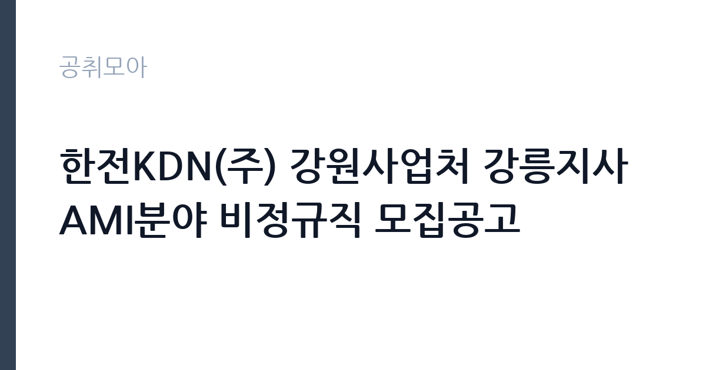

[공공기관] 한전KDN(주) 강원사업처 강릉지사 AMI분야 비정규직 모집공고
한전KDN · 강원 · 마감 2026-10-16 (D-15) · 출처 잡알리오

한눈에 보는 모집 조건
| 기관 | 한전KDN |
|---|---|
| 공고명 | 한전KDN(주) 강원사업처 강릉지사 AMI분야 비정규직 모집공고 |
| 고용형태 | 기간제 |
| 근무지 | 강원 |
| 게시일 | 2026-10-02 |
| 마감일 | 2026-10-16 (D-15) |
지원자격, 이렇게 읽으세요
- 공공기관 채용공시
- 세부 조건은 원문 공고문 확인
공통 자격으로 학력과 연령, 외국어 제한이 없으며, 병역법 제76조에 따른 병역의무 불이행 사실이 없어야 합니다. 건설업 기초 안전보건교육 이수자이거나 계약 시까지 이수 가능해야 하며, 주민등록상 주소지가 서울과 경기, 강원 중 하나여야 합니다. KDN조공 분야는 현장 설비 단순작업과 자재운반, 시공앱 사용 업무가 가능한 분이 대상이며, 제공 자료의 정보처리와 가공 업무 수행이 가능해야 합니다. 한전KDN 인사규정상 채용결격사유에 해당하지 않아야 합니다.
이 공고의 포인트
이 공고의 포인트는 세 가지입니다. 첫째, 학력 스펙 없이 지원 가능합니다. 안전교육 이수와 거주지 요건만 맞으면 됩니다. 둘째, 거주지 제한이 명확합니다. 주민등록상 서울과 경기, 강원 거주자만 지원할 수 있으니 전입 예정자는 주소 이전 시점을 확인하셔야 합니다. 셋째, 실무 중심 업무입니다. 현장 설비 작업과 시공앱 사용, 자료 가공이라 컴퓨터 기본 활용 능력이 필요합니다. 비정규직이므로 계약 기간과 보수는 원문에서 확인하셨습니다.
전형은 어떻게 진행되나
전형은 서류 심사와 면접으로 진행될 것으로 보이며, 정확한 전형 단계와 제출 서류는 모집공고문에서 확인하셔야 합니다. 거주지 요건은 주민등록등본으로 확인하므로 발급일을 공고문 기준에 맞추셨습니다. 안전보건교육 이수증이 있으면 미리 준비하시고, 미이수자는 계약 시까지 이수 계획을 세우셨습니다. 시공앱 사용과 자료 가공 경험을 지원서에 구체적으로 적으셨습니다.
원문에서 확인한 전형 방식
가. 공통 - 일반: 학력, 연령, 외국어 제한없음 - 병역: 병역법 제 76조에서 정한 병역의무 불이행 사실이 없는 자 - 자격: 건설업 기초 안전보건교육 이수자 또는 이수 가능자(계약시 증빙) - 기타: 당사 인사규정2.1.4(채용결격사유)에 해당하지 않는자(붙임1 참조) - 주민등록상 주소지가 서울/경기/강원인 자 나. KDN조공 - 현장 설비 단순작업 및 자재운반, 시공앱 사용 등의 업무수행이 가능한 자 - 제공되는 자료의 정보처리 및 가공 업무 수행이 가능한 자
이런 분께 추천해요
- 서울과 경기, 강원 거주로 강릉 현장 근무가 가능하신 분
- 건설업 기초 안전보건교육을 이수하셨거나 이수 가능하신 분
- 현장 작업과 컴퓨터 자료 가공을 함께 할 수 있으신 분
지원 전 체크리스트
- 주민등록상 주소지가 서울과 경기, 강원 중 하나인지 확인하셨습니다
- 안전보건교육 이수증이나 이수 계획을 준비하셨습니다
- 비정규직 계약 기간과 보수 조건을 원문에서 확인하셨습니다
- 마감일 10월 16일 이전에 접수를 마치셨습니다
모집 일정과 제출 타이밍
마감일은 2026년 10월 16일입니다. 거주지 요건 서류인 주민등록등본은 발급일 기준이 있을 수 있으니 공고문에서 확인하고 발급하셨습니다. 안전보건교육 미이수자는 교육 일정이 수 주가 걸릴 수 있어 지금 바로 신청하셔야 계약 시점에 맞출 수 있습니다. 접수 방법과 접수처는 모집공고문에서 확인하셨습니다.
직무 이해하기: 공공기관
AMI 분야 비정규직은 지능형 전력계량 설비의 현장 설치와 유지보수를 지원하는 업무를 맡습니다. KDN조공 분야 공고 내용처럼 현장 설비 단순작업과 자재운반, 시공앱을 이용한 작업 기록, 제공 자료의 정보처리와 가공이 주요 업무입니다. 한전KDN은 AMI 설비 고장 시 현장 출동으로 설비와 통신 상태를 확인하는 체계를 운영하며, 제주 지역 설비 데이터를 분석해 고장 유형을 분류하는 AI 장애진단시스템도 개발했습니다. 현장 작업자는 이런 설비 운영의 최전선에서 점검과 기록을 담당합니다.
자기소개서 작성 팁
자기소개서는 현장 경험과 컴퓨터 활용 능력을 함께 보여주셨습니다. 건설이나 설비 현장에서 어떤 작업을 했고, 엑셀이나 업무앱으로 어떤 자료를 다뤄봤는지를 구체적으로 적으셨습니다. 안전보건교육 이수 경험과 안전 수칙 준수 경험을 강조하셨습니다. 강릉과 강원 지역 근무 가능성과 거주지 요건 충족 여부를 명확히 밝히셨습니다.
면접 준비 포인트
면접에서는 현장 적응력과 기본 소양을 묻습니다. 야외 작업과 자재 운반, 비상 출동에 대한 수용 의사를 확인하는 질문이 나올 수 있습니다. 시공앱이나 스마트폰 업무앱 사용 경험을 묻는다면 실제 사용 사례를 설명하셨습니다. 안전사고 예방을 위해 어떤 점을 지키는지를 묻는 질문에는 교육에서 배운 내용을 바탕으로 답변하셨습니다. 계약직 신분과 계약 기간에 대한 이해도 확인될 수 있습니다.
급여·근무조건 읽는 법
보수와 계약 기간 같은 세부 조건은 원문 모집공고문에서 확인하셔야 합니다. 비정규직 현장 업무는 일급제나 월급제 등 다양한 형태가 있으니 공고문의 보수 항목을 꼼꼼히 읽으시기 바랍니다. 4대 보험과 퇴직금, 연장근로수당 적용 여부도 공고문과 담당 부서를 통해 확인하셨습니다. 정확한 수치가 없는 항목은 지어내지 않고 원문 기준으로 판단하시는 것이 안전합니다.
자주 묻는 질문
- AMI란 무엇인가요
지능형 전력계량 인프라로 검침원 방문 없이 전력사용량을 원격으로 확인하는 체계입니다. 한전KDN은 AMI 통신설비 관리와 장애 대응을 맡고 있으며, AI 장애진단시스템으로 고장 위치를 판단하는 기술도 운영하고 있습니다. - 거주지 제한이 있나요
주민등록상 주소지가 서울과 경기, 강원인 분이 대상입니다. 등본으로 확인하므로 발급일 기준을 공고문에서 확인하시고, 전입 예정자는 주소 이전 시점이 접수 기준을 만족하는지 따져보시기 바랍니다. - 안전보건교육은 어디서 받나요
건설업 기초 안전보건교육은 안전보건공단 지정 교육기관에서 받을 수 있으며 보통 하루 과정으로 운영됩니다. 미이수자도 이수 가능하면 지원할 수 있으니 교육 일정을 미리 잡으시기 바랍니다.
함께 보면 좋은 공고
[공공기관] 한국토지주택공사 경기남부지역본부 기간제근로자(보상일반역, 보상전문역) 채용공고 — 마감 2026-10-16[공공기관] 한국토지주택공사 광주전남지역본부 기간제근로자(보상일반역, 보상전문역) 채용공고 — 마감 2026-10-16[공공기관] 한국토지주택공사 세종특별본부 기간제근로자(보상일반역, 보상전문역) 채용공고 — 마감 2026-10-19출처: 잡알리오 공개정보를 바탕으로 공취모아가 정리한 안내글입니다. 모집 조건·일정은 변경될 수 있으니 지원 전 반드시 원문 공고문을 확인하세요. 본 글은 정보 제공용이며 합격을 보장하지 않습니다.